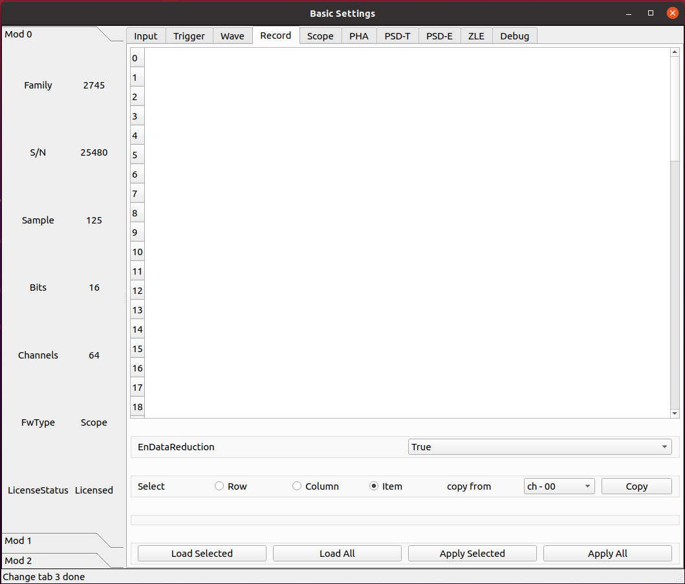

SCOPE 固件¶
基本参数配置¶
输入信号¶

参数 InputDelay¶
设置输入延迟，单位为采样点。
该值设置每 4 个通道共用一个相同配置。
参数 ChEnable¶
独立设定每个通道是否开启使用。如果通道不启用，它不提供任何数据，同时它的自触发也关闭。
参数 WaveSource¶
在正常模式下，采集的波形来源于模拟输入的 A/D 转换产生的 ADC 采样序列。出于测试目的，可以用内部数据生成器替换 ADC 数据。
- ADC_DATA
Data from the ADC (normal operating mode)
- ADC_TEST_TOGGLE
Toggle between 0x5555 and 0xAAAA (test mode)
- ADC_TEST_RAMP
16-bit ramp pattern (test mode)
- ADC_TEST_SIN
8-point sine wave test pattern
- ADC_TEST_PRBS
16-bit PRBS generated by a 23-bit PRBS pattern generator (test mode)
- Ramp
Data from a ramp generator. It is actually a 16-bit field, where the 6 most significant bits identify the channel and the 10 less significant bits are the samples of a ramp from 0x000 up to 0x3FF (i.e. 0 to 1023). It is so a 10-bit ramp with offset given by “channel*1024”. For channel 0, it is a counter from 0 to 1023; for channel 1, it is a counter from 1024 to 2047, and so on
- IPE
Not implemented
- SquareWave
Internally generated programmable square wave
参数 DCOffset¶
对于每个通道，将恒定的 DC 偏移（由 16 位 DAC 控制）添加到模拟输入，以在 ADC 的动态范围内调整信号基线的位置（即模拟输入的“零伏”）。
由于部件的公差，有必要校准偏移 DAC。校准是通过工厂测试完成的，通常不需要重新校准。然而，可以执行新的校准。校准参数存储在板的闪存中，并在通电时加载。每次写入或读取 DCoffset 参数时，内部逻辑会自动应用这些参数。
DCoffset 参数为数字，单位为满刻度的百分比。当 DCoffset为 0 时，输入信号的基线处于 ADC 0。当 DCoffset 为 100 时，输入信号的基线处于 ADC $2^{NBIT}-1$。
参数 VGAGain¶
2745 特有。
以 0.5 dB 为步长设置可变增益放大器（VGA）的增益。参数设置每 16 个通道为一组， 64 通道分为 4 组。最小可设置为 0，最大为 40。
触发¶

参数 TriggerThr¶
数字化模块的每个通道都有一个数字前沿甄别器，该甄别器具有可编程阈值，能够对输入脉冲进行自触发，并产生一个自触发信号（或过阈值信号），馈送道内部触发逻辑或输出端口。
此参数设置触发阈值。典型地，该值是相对于信号的基线的，并且阈值是 17 位带符号的整数；在这种情况下，当 DCoffset 参数改变时，阈值自动跟随基线。有时，设置阈值的绝对值是更好的策略，该阈值相对于 ADC 道址的范围；在这种情况下，阈值是无符号的整数。
参数 SelfTriggerWidth¶
产生自触发信号的数字前沿甄别器的输出可以在“线性”模式下使用，这意味着它会持续信号保持在阈值以上（或以下）的时间，从而充当“过阈值”信号，或者可以通过可编程门产生器，使其成为固定宽度的脉冲。门产生器是不可再触发的单稳态，当超过阈值时变高，在编程时间后变低。该参数定义了过阈值的固定宽度脉冲。
参数 TriggerThrMode¶
定义触发阈值是相对于基线还是绝对阈值。
- Relative
The threshold is relative to the baseline and automatically follows it when the DCOffset parameter is changed.
- Absolute
The threshold is absolute, referred to the ADC input range. It does not follow the DCOffset setting.
参数 SelfTriggerEdge¶
定义自触发必须在阈值上升或下降时产生。同样地，当信号高于或低于阈值时，过阈值信号将为 TRUE。
- RISE
The trigger occurs on the rising crossing of the threshold and the OverThr is true when the signal is above the threshold
- FALL
The trigger occurs on the falling crossing of the threshold and the OverThr is true when the signal is below the threshold
数据记录¶
参数 EnDataReduction¶
参数 xxx
scope¶

参数 SamplesOverThreshold¶
超过阈值的样点数。
参数 OverThresholdVetoWidth¶
Veto width to discard triggers when crossing the threshold in the opposite direction to the trigger one
参数 ChSupperThr¶
通道零抑制阈值。与 TriggerThr 共享的配置参数 TriggerThrMode 和 SelfTriggerEdge。
单位为整数， ADC 道址。
参数 ChSupperSamplesOverThreshold¶
通道零抑制超过阈值的采样点数。
参数 EnChSupper¶
启用通道零抑制。
- True
Channel zero-suppression is enabled
- False
Channel zero-suppression is disabled
参数 PreTrigger¶
触发在波形中的位置之前的时间（即预触发窗口的大小）。波形的实际大小将自动四舍五入到最接近的允许值。通过读回参数可以得到确切的数值。
单位为时间，ns
参数 RecordLength¶
波形大小（即采集窗口的大小）。波形的实际大小将自动四舍五入到最接近的允许值。通过读回参数可以得到确切的数值。记录时间长度取决于降频设置。
单位为时间，ns
参数 DecimationFactor¶
设置应用于模块标称采样频率的抽取因子。如果启用，则参数 RecordLength、PreTrigger 和 TriggerDelay 按照标称采样计算采样点数，实际两个采样点的间隔为抽取因子设置的时间间隔。
- 1
Decimation disabled (default)
- 2
Sampling Frequency / 2
- 4
Sampling Frequency / 4
- 8
Sampling Frequency / 8
- 16
Sampling Frequency / 16
- 32
Sampling Frequency / 32
- 64
Sampling Frequency / 64
- 128
Sampling Frequency / 128
- 256
Sampling Frequency / 256
- 512
Sampling Frequency / 512
- 1024
Sampling Frequency / 1024
参数 TriggerDelay¶
表示添加到采集触发器延迟的时间。此参数可用于获取在触发位置之后开始的窗口。
单位为时间，ns
诊断¶

参数 TestPulsePeriod¶
测试脉冲是一种可编程方波，可用作内部周期性触发器（主要用于测试目的）或在 TRGOUT 和 GPIO 输出上生成逻辑测试脉冲（TTL 或 NIM）。此参数设置测试脉冲的周期。
单位为时间，ns
参数 TestPulseWidth¶
测试脉冲的宽度（信号保持高电平的时间）。
单位为时间，ns
参数 TestPulseLowLevel¶
以 ADC 道址表示的测试脉冲低电平
参数 TestPulseHighLevel¶
以 ADC 道址表示的测试脉冲高电平
参数 DACoutMode¶
选择要在前面板 DAC LEMO口输出发送的信号类型。
- Static
DAC output stays at a fixed level, given by the DACoutStaticLevel parameter
- Ramp
The DAC output is driven by a 14-bit counter
- Sin5MHz
The DAC output is a sine wave at 5 MHz with fixed amplitude
- Square
Square wave with period and with set by TestPulsePeriod and TestPulseWidth and amplitude between TestPulseLoweLevel and TestPulseHighLevel.
- IPE
Not implemented
- ChInput
The DAC reproduces the input signal received by one input channel, selected by the DACoutChSelect parameter
- MemOccupancy
Level of the memory occupancy (not yet implemented)
- ChSum
The DAC reproduces the “analog” sum of all the digitizer inputs (not yet implemented)
- OverThrSum
The DAC output is proportional to the number of channels that are currently above the threshold
参数 DACoutStaticLevel¶
当 DACoutMode = Static 时，此参数设置 DAC 输出的 14 位电平。
参数 DACoutChSelect¶
当 DACoutMode = ChInput 时，DAC 输出由该参数选择的通道的输入信号。
逻辑参数配置¶